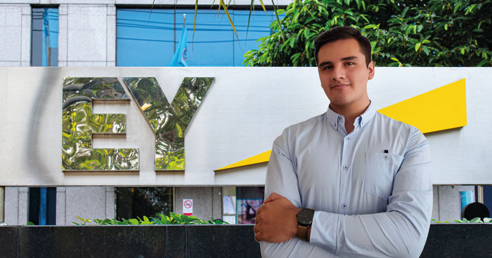

.png)
Iniciar sesion
Brayan Horna Martinez
Mi web Personal
NOTICIAS
Estudiantes de Ingeniería de Sistemas USAT obtienen prácticas en EY, compañía líder global en servicios de auditoría
Raibran Anthony Ruiz Valdez y Habana Sabra Chatila Vargas Toscanelli, estudiantes del X ciclo de la Escuela de Ingeniería de Sistemas y Computación USAT, fueron seleccionados y contratados como practicantes por Ernst & Young (EY) Perú, compañía líder global en servicios de auditoría, consultoría, impuestos, transacciones y finanzas corporativas. Los alumnos USAT realizarán sus prácticas por tres meses en el Service Line Consulting de EY Perú, donde se desempeñan como consultores de riesgos tecnológicos. Ruiz Valdez y Vargas Toscanelli realizan tareas enfocadas en la revisión de procesos e identificación de vulnerabilidad, riesgos y amenazas en los sistemas de información. “Me siento agradecido y honrado por haber sido admitido en una de las firmas más importantes del mundo en el sector de auditoría y consultoría. Estas prácticas representan una gran oportunidad para mi desarrollo profesional y son un gran paso en mi vida personal”, comentó Ruiz Valdez. El ingeniero de sistemas y computación añadió que el gran beneficio de trabajar en EY Perú es el conocimiento de primera mano que obtendrá en cuanto a tecnología. “Los clientes de esta organización son muy grandes a nivel nacional e internacional, por lo que la experiencia en estas prácticas son un gran paso para crecer profesionalmente”, afirmó. Por su parte, Vargas Toscanelli señaló que sus prácticas en EY Perú contribuyen con su formación profesional porque conocerá más sobre el ámbito de la auditoría, rama de su carrera por la cual se inclina. “También me interesó formar parte de la empresa por su prestigio a nivel internacional”, indicó la joven. Tanto Vargas Toscanelli como Ruiz Valdez son estudiantes del curso Auditoría de Sistemas de Información del semestre 2021-I y 2021-II, respectivamente. Esta materia es dictada por la docente USAT, Mgtr. Ing. Karla Vanessa Barreto Stein, quien motiva a sus alumnos en la adquisición de conocimientos y experiencias mediante el ejercicio de prácticas profesionales en empresas de este nivel. Cabe destacar que Ernest & Young (EY) es una firma multinacional y de las más importantes firmas de servicios profesionales del mundo calificada como una Big Four que incluye los servicios de auditoría, impuestos, finanzas, contabilidad, asesoría legal, servicios de cálculos, estudios actuariales y asesoramiento en la gestión de la empresa.
Reconocido conferencista mexicano dicta ponencia a estudiantes de la Escuela de Ingeniería de Sistemas y Computación USAT
Los nuevos profesionales de manejo de las tecnologías de la información necesitan estar preparados para ayudar a las empresas a mitigar riesgos e implementar controles adecuados para proteger su información. En ese sentido, los estudiantes de la Escuela de Ingeniería de Sistemas y Computación USAT, participaron de la charla ‘El AudiTHOR en el misterioso mundo de TI’, a cargo del reconocido conferencista mexicano, Ing. Arnulfo Espinosa Domínguez. La charla se desarrolló el 1 de junio y asistieron los estudiantes de la asignatura de Auditoría de Sistemas de Información (X ciclo) y estudiantes de los últimos ciclos de la carrera, quienes reforzaron sus conocimientos sobre Auditoría de Tecnologías de la Información (TI), Gobierno y Control de TI, Ciberseguridad y Riesgos; de la mano de Espinosa, quien es ingeniero en Electrónica y Comunicaciones, con más de 19 años de experiencia profesional. Respecto a la conferencia, el actual director de Auditoría TI, Sucursales e Investigaciones en uno de los principales Grupos Financieros de México, explicó que auditar es una actividad de aseguramiento independiente y objetiva, cuya finalidad es confirmar la existencia de controles efectivos y eficientes que protejan la confidenci